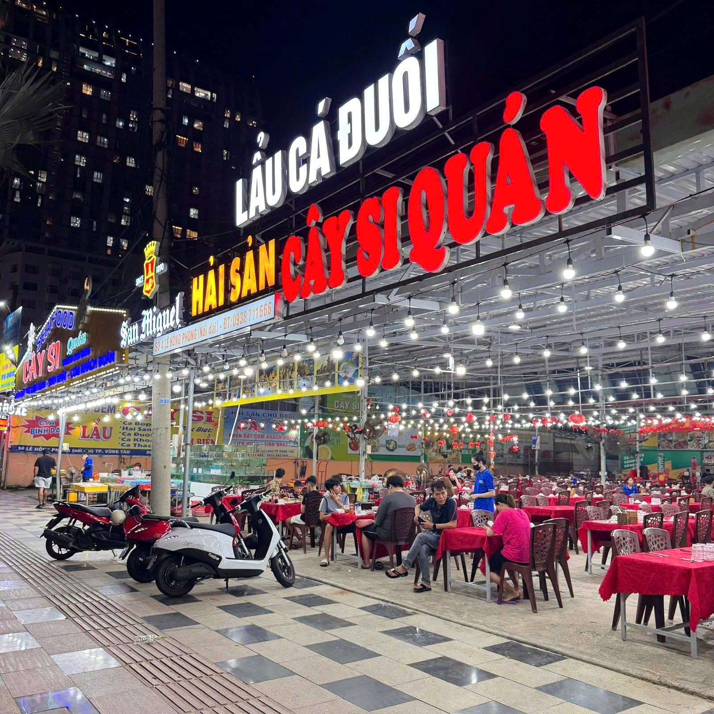
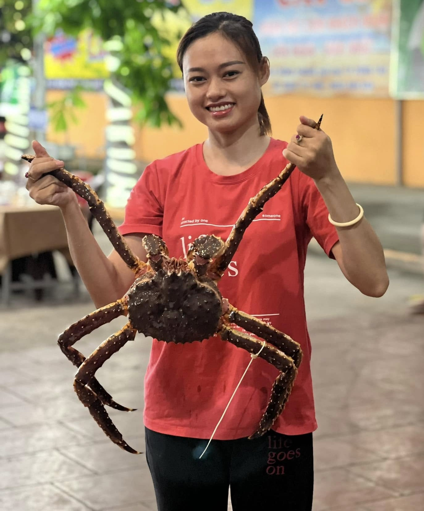
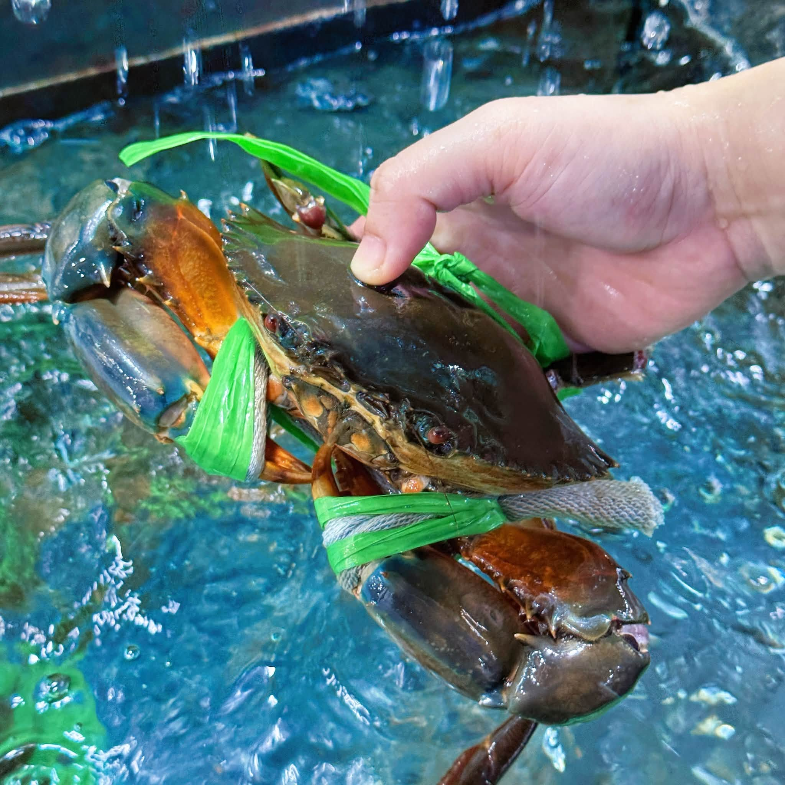
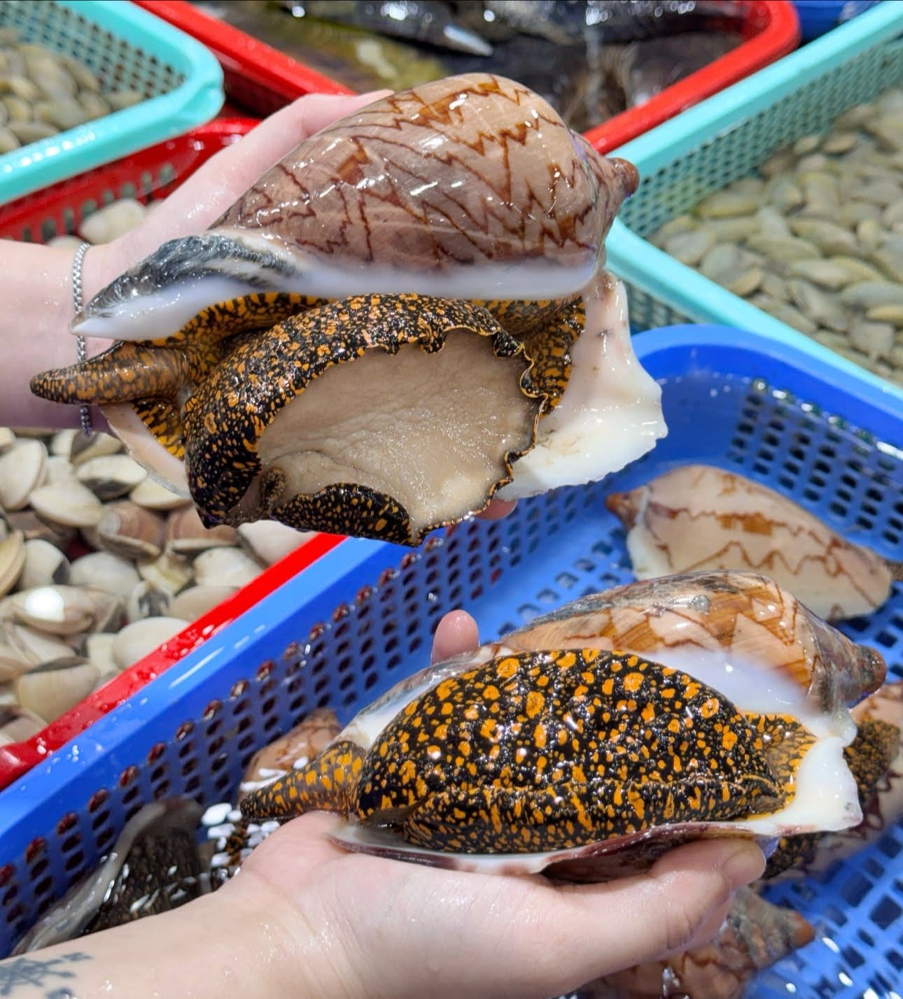
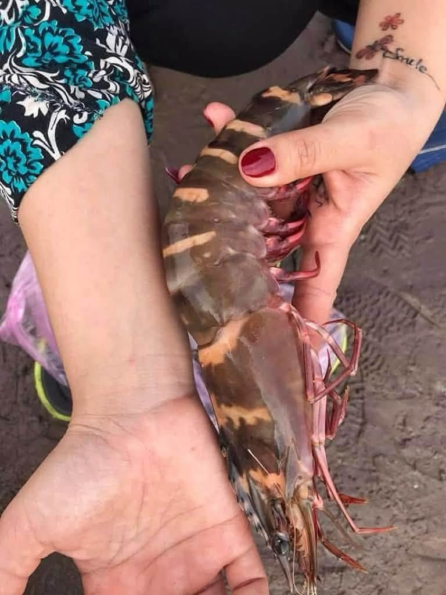
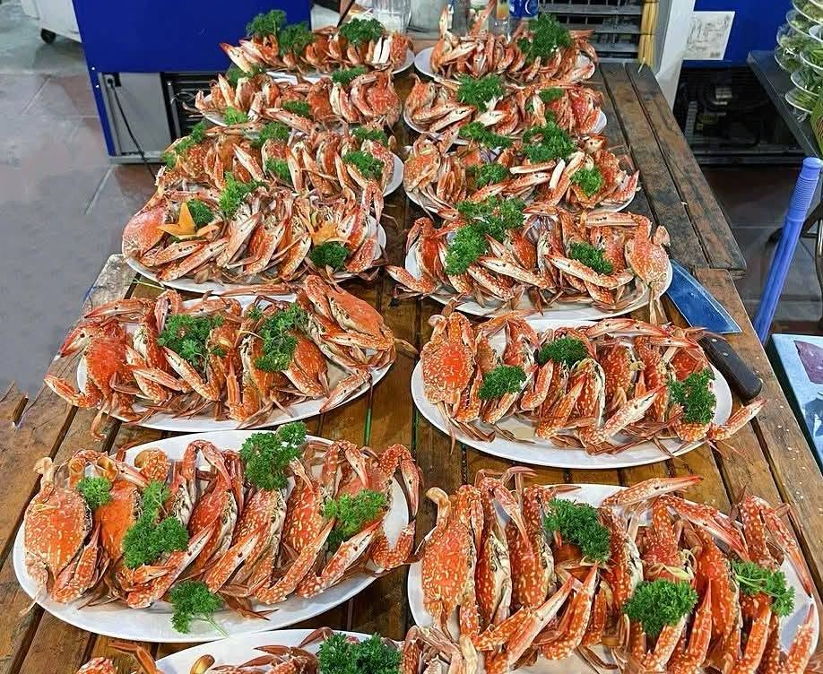
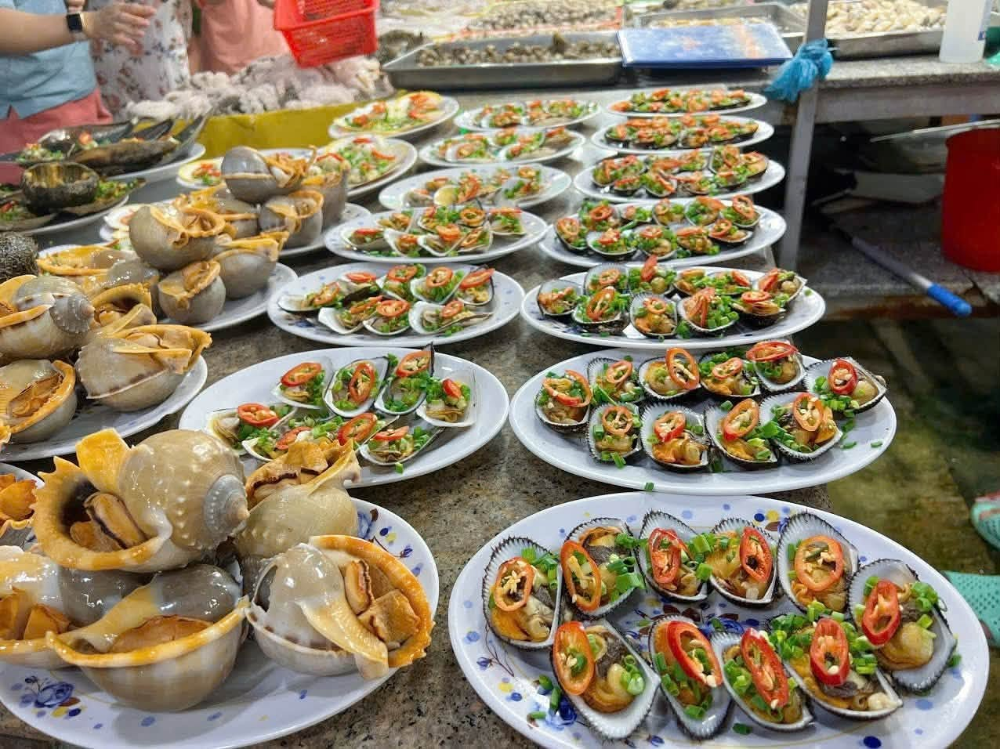
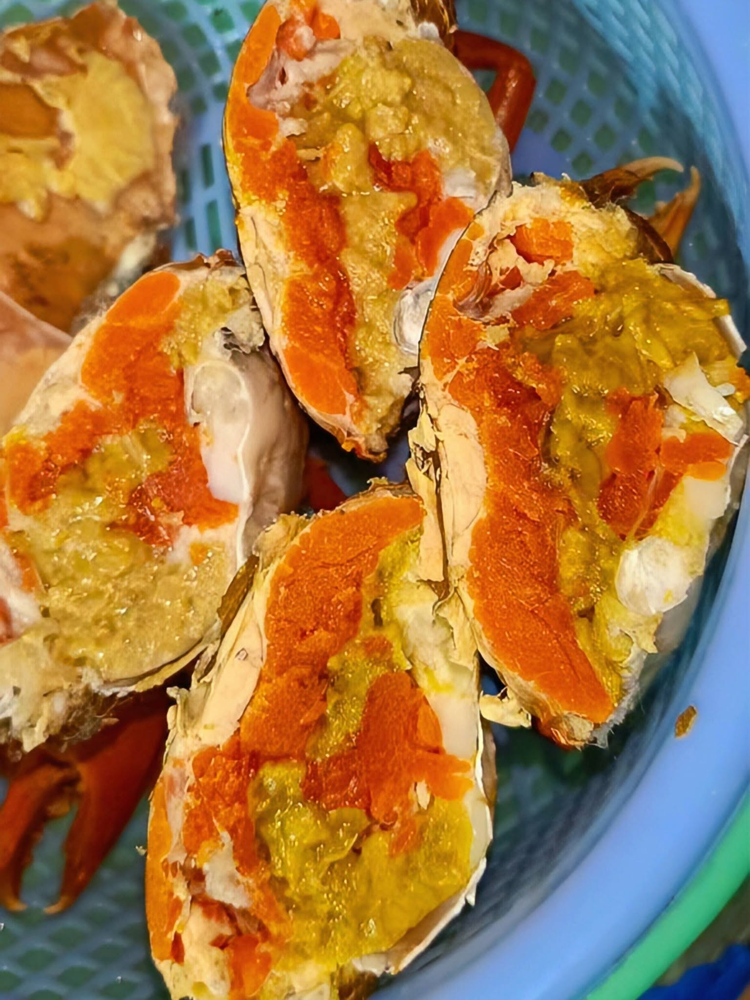
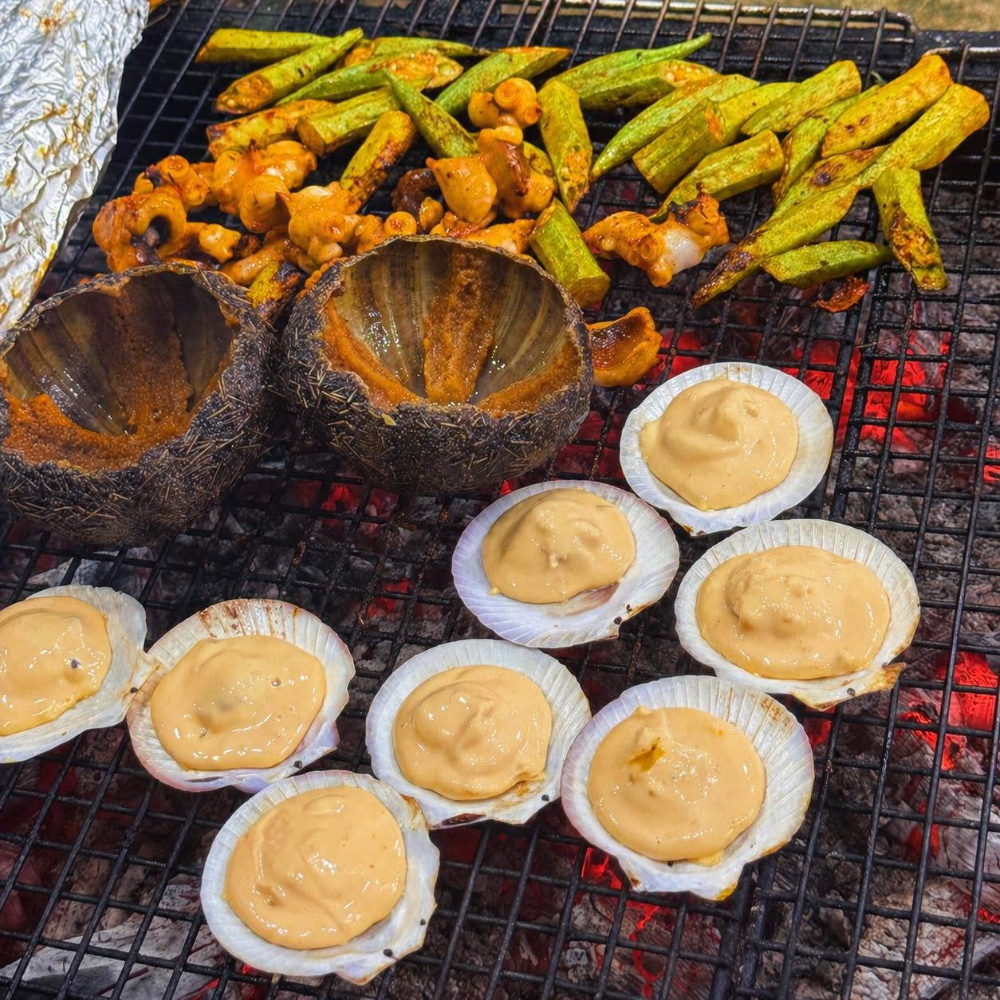
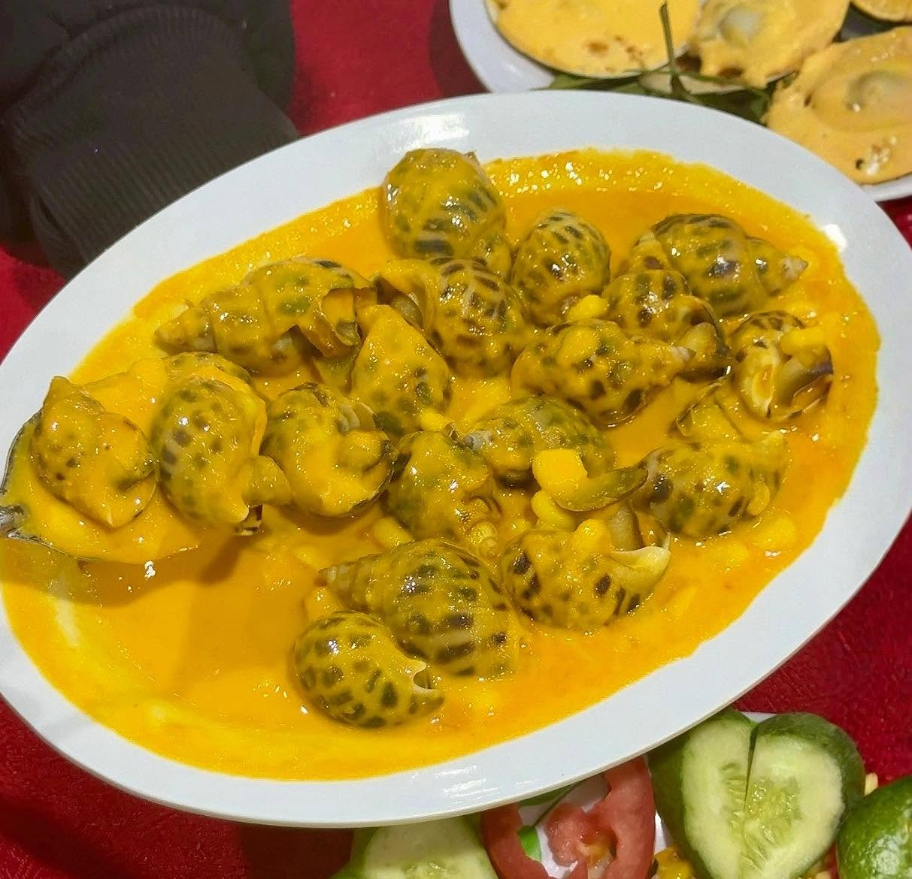

Tiệc gia đình & kỷ niệm
Từ sinh nhật, liên hoan đến những buổi sum họp thân mật, Cây Si mang đến không gian ẩm thực gần gũi cho những dịp đáng nhớ.
VỀ CÂY SI QUÁN
Từ năm 2016, Cây Si Quán mang đến những bữa tiệc hải sản tươi ngon, đậm đà hương vị biển cả. Nơi thực khách không chỉ đến để thưởng thức món ngon, mà còn để tận hưởng những khoảnh khắc sum vầy bên gia đình, bạn bè và những người thân yêu.
Xem thực đơn ↗
CÂY SI STORYCÂU CHUYỆN CỦA CHÚNG TÔI
Cây Si Quán là nhà hàng chuyên hải sản tươi sống, mang đến trải nghiệm ẩm thực gần gũi và phong phú, đậm chất biển.
Tọa lạc tại số 4 Lê Hồng Phong Nối Dài, giữa lòng thành phố biển Vũng Tàu, Cây Si Quán là nhà hàng chuyên phục vụ hải sản tươi sống, mang đến trải nghiệm ẩm thực gần gũi, phong phú và đậm chất miền biển.
Thành lập từ năm 2016, Cây Si Quán được xây dựng với mong muốn đơn giản: mang những sản vật tươi ngon của biển cả đến gần hơn với mọi thực khách.
Không cầu kỳ hay kiểu cách, Cây Si giữ cho mình nét mộc mạc và chân thành trong từng bữa ăn. Từ những món hải sản dân dã đến các loại hải sản cao cấp, mỗi lựa chọn đều góp phần tạo nên một trải nghiệm ẩm thực Vũng Tàu thật đáng nhớ.
HÀNH TRÌNH CỦA CÂY SI
Trải qua hành trình phát triển từ năm 2016, Cây Si Quán luôn giữ vững tinh thần phục vụ những bữa ăn ngon, những nguyên liệu tươi và những cuộc gặp gỡ đầy niềm vui.
Chúng tôi tin rằng một nhà hàng đáng nhớ không chỉ nằm ở món ăn, mà còn ở cảm giác được quây quần bên những người thân yêu.
Và đó cũng là điều Cây Si mong muốn gìn giữ qua từng ngày.
2016 — Năm khởi đầu hành trình của Cây Si Quán.


TƯƠI SỐNG MỖI NGÀY
Một trong những trải nghiệm thú vị nhất tại Cây Si Quán chính là được tự tay lựa chọn hải sản tươi sống ngay tại bể.
Từ những chú cua chắc thịt, tôm tươi đến các loại cá, ốc, sò và nhiều sản vật đặc trưng của vùng biển, thực khách có thể trực tiếp quan sát và lựa chọn nguyên liệu cho bữa ăn của mình.
Hải sản sau khi được lựa chọn sẽ được chế biến theo yêu cầu, từ hấp, nướng, rang me, cháy tỏi đến những món lẩu nóng hổi, đậm đà.
Tươi từ bể — Ngon trên bàn.MÙA HẢI SẢN SIZE KHỦNG
Có những món ngon không phải lúc nào cũng xuất hiện.
Tại Cây Si Quán, tùy theo mùa biển và từng con nước, thực khách có cơ hội khám phá những loại hải sản kích thước ấn tượng — những chú cua lớn, cá biển cỡ đại và nhiều sản vật đặc biệt khác.
Mỗi mùa mang đến một lựa chọn mới, một hương vị mới và đôi khi là những bất ngờ thú vị dành cho người yêu hải sản.
Nếu bạn đang tìm kiếm một trải nghiệm ẩm thực khác biệt, đừng quên hỏi Cây Si hôm nay có gì đặc biệt nhé!
Hải sản theo mùa và kích thước thực tế phụ thuộc vào nguồn hàng từng thời điểm.
HƯƠNG VỊ CỦA BIỂN
Tại Cây Si, mỗi loại hải sản đều có nét ngon riêng, và cách chế biến chính là điều giúp hương vị ấy trở nên trọn vẹn.
Bạn có thể chọn một đĩa hàu nướng mỡ hành thơm lừng, mực chiên nước mắm đậm vị, cá hấp Hong Kong thanh ngọt hay một nồi lẩu hải sản nóng hổi để cùng nhau thưởng thức. Từ món ăn quen thuộc đến những lựa chọn đặc sắc, thực đơn Cây Si mang đến sự đa dạng để mỗi thực khách đều có thể tìm thấy hương vị yêu thích của mình.
Khám phá toàn bộ thực đơn ↗


CAM KẾT TỪ CÂY SI
Chúng tôi tin rằng nguyên liệu tốt chính là nền tảng của một món ăn ngon.
Vì vậy, Cây Si Quán chú trọng lựa chọn nguồn hải sản từ những nhà cung cấp uy tín tại Vũng Tàu, ưu tiên độ tươi ngon và chất lượng của từng nguyên liệu.
Từ khâu lựa chọn hải sản đến chế biến và phục vụ, chúng tôi luôn hướng đến một mục tiêu: mang đến những bữa ăn ngon miệng, chỉn chu và xứng đáng với sự tin yêu của thực khách.


KHÔNG GIAN GẮN KẾT
Có những bữa ăn ngon nhất không phải vì món ăn cầu kỳ, mà vì có đúng những người mình yêu quý ngồi bên cạnh.
Với không gian rộng rãi, thoáng mát và không khí gần gũi, Cây Si Quán là nơi thích hợp cho những bữa cơm gia đình, những buổi họp mặt bạn bè hay các đoàn khách cùng nhau khám phá ẩm thực Vũng Tàu.
Dù là một bữa ăn giản dị hay một dịp đặc biệt, Cây Si luôn mong muốn trở thành nơi lưu giữ những tiếng cười và khoảnh khắc đáng nhớ.
Khám phá không gian↗MỖI CUỘC GẶP GỠ ĐỀU ĐÁNG GIÁ
Từ sinh nhật, liên hoan đến những buổi sum họp thân mật, Cây Si mang đến không gian ẩm thực gần gũi cho những dịp đáng nhớ.
Thực đơn phong phú cùng không gian rộng rãi giúp các đoàn du lịch và nhóm đông người dễ dàng cùng nhau thưởng thức hương vị biển Vũng Tàu.
Một bữa ăn ngon và không gian thoải mái góp phần tạo nên những cuộc gặp gỡ, trò chuyện và kết nối ý nghĩa.
HẸN NHAU Ở CÂY SI
Bạn đang lên kế hoạch cho một bữa ăn bên gia đình, bạn bè hay khách đoàn? Gọi cho Cây Si để trao đổi và đặt bàn.